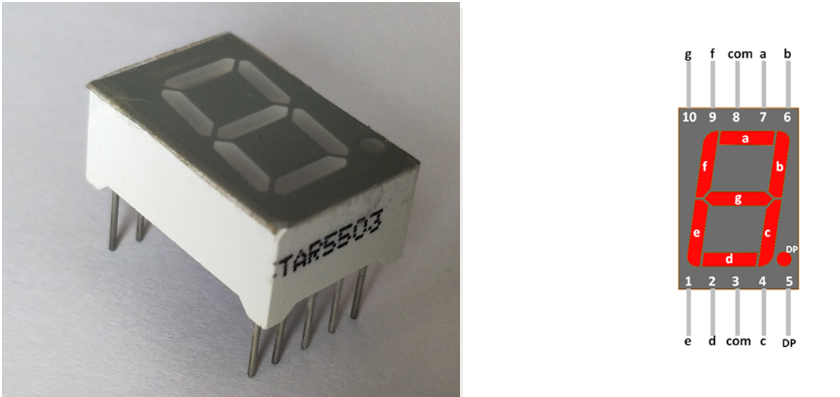

Het 7-segment display
Een 7-segment display is zeven leds in de vorm van een acht, plus meestal een achtste voor de decimale punt. Elk cijfer dat je toont, is een keuze welke van die zeven branden.
De segmenten en hun namen
De zeven segmenten heten a tot en met g, en die namen zijn een afspraak die overal hetzelfde is. Segment a is de bovenste balk, en vanaf daar loop je met de klok mee: b rechtsboven, c rechtsonder, d onderaan, e linksonder, f linksboven, en g de balk in het midden. De decimale punt heet dp.

Elk segment heeft zijn eigen aansluiting, en daarnaast is er één gemeenschappelijke pin waar alle zeven leds met hun andere kant op uitkomen. Een display sturen kost je dus zeven Arduino-pinnen, acht als je ook dp nodig hebt.

Common anode of common cathode
Er bestaan twee soorten, en welke je hebt bepaalt of je een segment met HIGH of met LOW laat branden. Het verschil zit in wat er met die gemeenschappelijke pin gebeurt:
| Common cathode | Common anode | |
|---|---|---|
| De gemeenschappelijke pin gaat naar | GND | +5 V |
| Een segment brandt bij | HIGH |
LOW |
| De Arduino-pin | sourcet de stroom | sinkt de stroom |
Het is hetzelfde onderscheid als in Sourcen en sinken.
De zeven segmenten delen hun gemeenschappelijke pin, maar niet hun stroom. Zet je één weerstand in die gemeenschappelijke tak, dan verdeelt de stroom zich over de segmenten die toevallig aan staan en verandert de helderheid met elk cijfer: een 1 (twee segmenten) brandt dan feller dan een 8 (zeven segmenten). Geef daarom elk segment zijn eigen serieweerstand. Een segment is een gewone led dus de berekening van de voorschakelweerstand is gelijkaardig aan die van een gewone led. Hoe je die precies berekent, staat op De wet van Ohm.
Van cijfer naar patroon
Om een cijfer te tonen moet je weten welke segmenten erbij horen. Voor een 7 zijn dat a, b en c; voor een 0 alles behalve g.
| Cijfer | a | b | c | d | e | f | g |
|---|---|---|---|---|---|---|---|
| 0 | 1 | 1 | 1 | 1 | 1 | 1 | 0 |
| 1 | 0 | 1 | 1 | 0 | 0 | 0 | 0 |
| 2 | 1 | 1 | 0 | 1 | 1 | 0 | 1 |
| 3 | 1 | 1 | 1 | 1 | 0 | 0 | 1 |
| 4 | 0 | 1 | 1 | 0 | 0 | 1 | 1 |
| 5 | 1 | 0 | 1 | 1 | 0 | 1 | 1 |
| 6 | 1 | 0 | 1 | 1 | 1 | 1 | 1 |
| 7 | 1 | 1 | 1 | 0 | 0 | 0 | 0 |
| 8 | 1 | 1 | 1 | 1 | 1 | 1 | 1 |
| 9 | 1 | 1 | 1 | 1 | 0 | 1 | 1 |
Diezelfde tabel in code is een tweedimensionale array van tien rijen van zeven waarden. De rij die je uitleest is het cijfer dat je wil tonen, de kolom is het segment. Het programma hieronder zet daarmee een 4 op het display. Deze waarden zijn die van een common cathode display, waar een 1 het niveau HIGH wordt en het segment dus doet branden:
const int segmentPins[7] = {2, 3, 4, 5, 6, 7, 8}; // a tot en met g
// Eén rij per cijfer, één kolom per segment: a,b,c,d,e,f,g.
// Common cathode: 1 = HIGH = segment aan.
const bool cijferPatronen[10][7] = {
{1, 1, 1, 1, 1, 1, 0}, // 0
{0, 1, 1, 0, 0, 0, 0}, // 1
{1, 1, 0, 1, 1, 0, 1}, // 2
{1, 1, 1, 1, 0, 0, 1}, // 3
{0, 1, 1, 0, 0, 1, 1}, // 4
{1, 0, 1, 1, 0, 1, 1}, // 5
{1, 0, 1, 1, 1, 1, 1}, // 6
{1, 1, 1, 0, 0, 0, 0}, // 7
{1, 1, 1, 1, 1, 1, 1}, // 8
{1, 1, 1, 1, 0, 1, 1} // 9
};
void setup()
{
for (int i = 0; i < 7; i++)
{
pinMode(segmentPins[i], OUTPUT);
}
}
void toonCijfer(int cijfer)
{
// Rij 'cijfer' uit de tabel op de zeven segmentpinnen zetten
for (int i = 0; i < 7; i++)
{
digitalWrite(segmentPins[i], cijferPatronen[cijfer][i] ? HIGH : LOW);
}
}
void loop()
{
toonCijfer(4);
}Meerdere displays
Wil je twee cijfers tonen, dan heb je twee displays en minstens veertien pinnen nodig. Dat begint al lastig te worden voor een Arduino Uno of Leonardo want er zijn niet genoeg pinnen beschikbaar. Er zijn drie oplossingen: de eerste is Multiplexing en de andere (schuifregister en I2C I/O expander) bespreken we in labo 3 en 4.